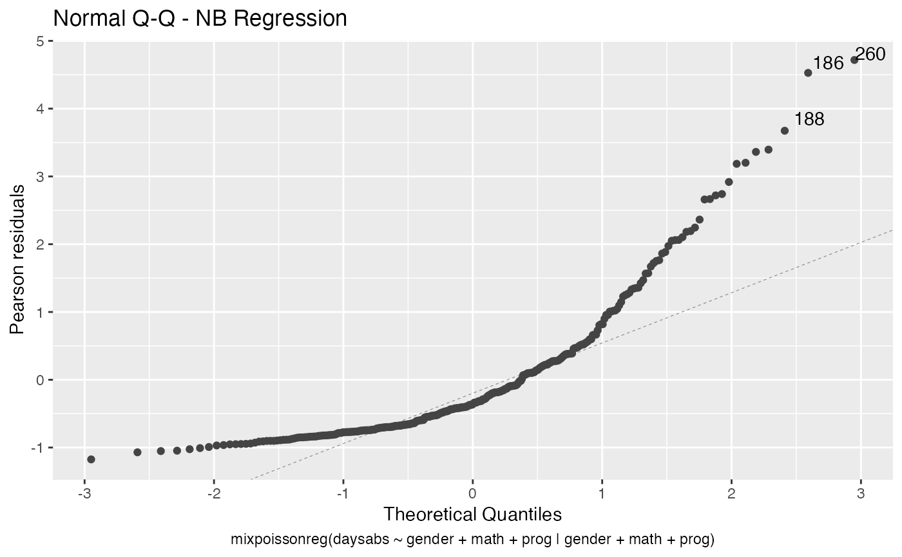
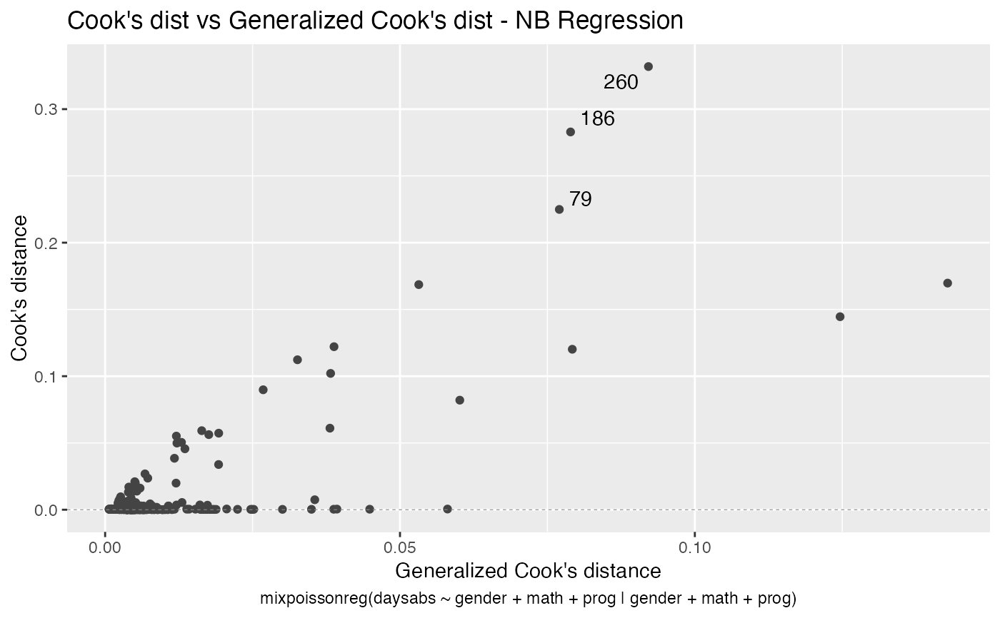
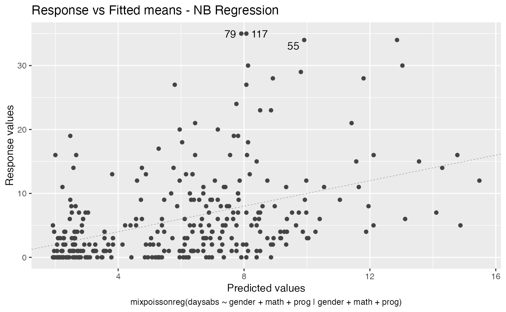
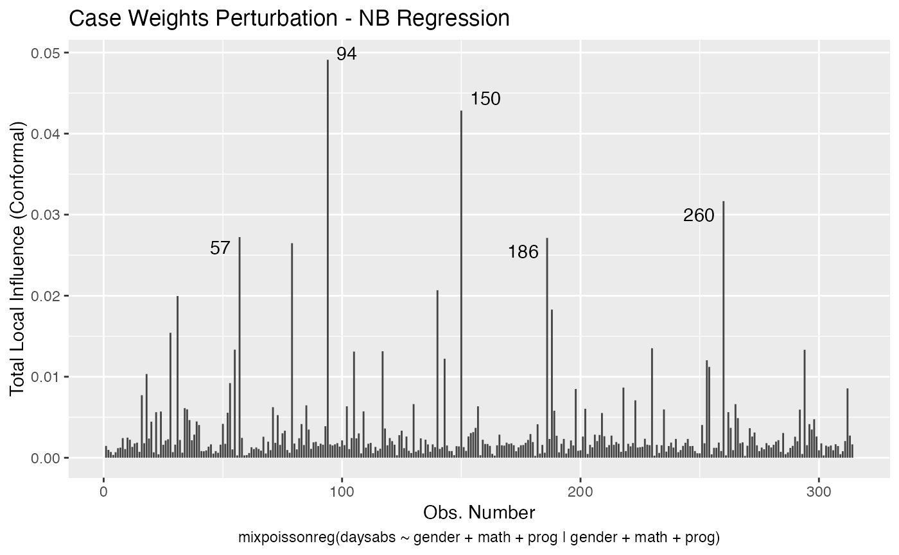
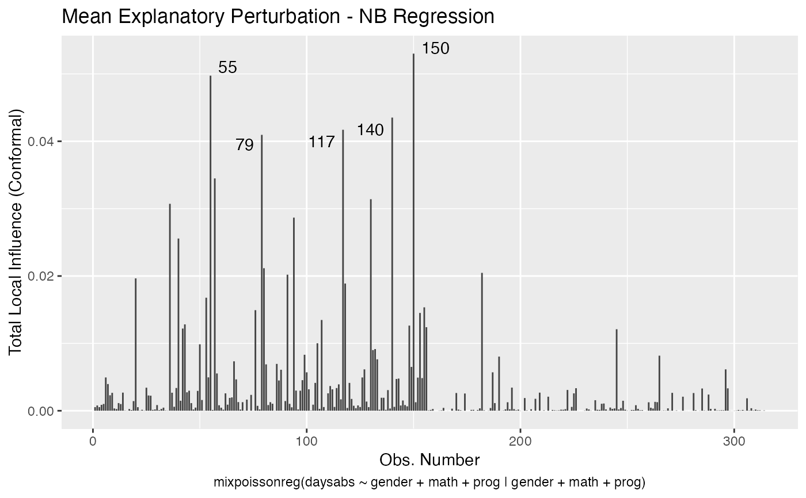
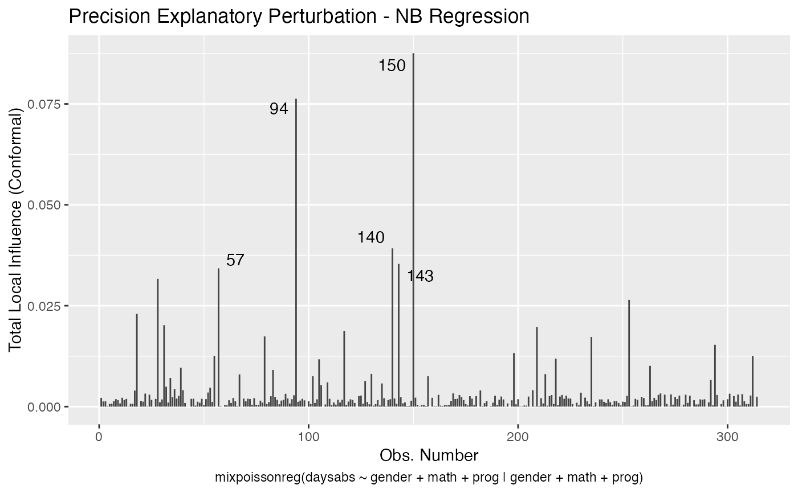

Fits mixed Poisson regression models (Poisson-Inverse Gaussian or Negative-Binomial) on data sets with response variables being count data. The models can have varying precision parameter, where a linear regression structure (through a link function) is assumed to hold on the precision parameter. The Expectation-Maximization algorithm for both these models (Poisson Inverse Gaussian and Negative Binomial) is an important contribution of this package. Another important feature of this package is the set of functions to perform global and local influence analysis.
mixpoissonreg( formula, data, link.mean = c("log", "sqrt"), link.precision = c("identity", "log", "inverse.sqrt"), model = c("NB", "PIG"), method = c("EM", "ML"), residual = c("pearson", "score"), y = TRUE, x = TRUE, w = TRUE, envelope = 0, prob = 0.95, model.frame = TRUE, em_controls = list(maxit = 5000, em_tol = 10^(-5), em_tolgrad = 10^(-2)), optim_method = "L-BFGS-B", optim_controls = list() ) mixpoissonreg.fit( y, x, w = NULL, link.mean = c("log", "sqrt"), link.precision = c("identity", "log", "inverse.sqrt"), model = c("NB", "PIG"), method = c("EM", "ML"), residual = c("pearson", "score"), envelope = 0, prob = 0.95, em_controls = list(maxit = 5000, em_tol = 10^(-5), em_tolgrad = 10^(-2)), optim_method = "L-BFGS-B", optim_controls = list() )
| formula | symbolic description of the model (examples: |
|---|---|
| data | elements expressed in formula. This is usually a data frame composed by:
(i) the observations formed by count data |
| link.mean | optionally, a string containing the link function for the mean. If omitted, the 'log' link function will be used. The possible link functions for the mean are "log" and "sqrt". |
| link.precision | optionally, a string containing the link function the precision parameter. If omitted and the only precision covariate is the intercept, the 'identity' link function will be used, if omitted and there is a precision covariate other than the intercept, the 'log' link function will be used. The possible link functions for the precision parameter are "identity" and "inverse.sqrt" (which is \(\phi^{-1/2} = w_i^T alpha\)). |
| model | character ("NB" or "PIG") indicating the type of model to be fitted, with "NB" standing for Negative-Binomial and "PIG" standing for Poisson Inverse Gaussian. The default is "NB". |
| method | estimation method to be chosen between "EM" (Expectation-Maximization) and "ML" (Maximum-Likelihood). The default method is "EM". |
| residual | character indicating the type of residual to be evaluated ("pearson" or "score"). The default is "pearson". Notice that they coincide for Negative-Binomial models. |
| y | For For |
| x | For For |
| w | For For |
| envelope | number of simulations (synthetic data sets) to build envelopes for residuals (with |
| prob | probability indicating the confidence level for the envelopes (default: |
| model.frame | logical indicating whether the model frame should be returned as component of the returned value. |
| em_controls | only used with the 'EM' method. A list containing two elements: |
| optim_method | main optimization algorithm to be used. The available methods are the same as those of |
| optim_controls | a list of control arguments to be passed to the |
mixpoissonreg returns an object of class "mixpoissonreg" whereas mixpoissonreg.fit
returns an object of class "mixpoissonreg_fit". Both objects are given by lists containing the outputs from the model fit (Negative-Binomial or Poisson Inverse Gaussian regression).
An object of the class "mixpoissonreg" is a list containing the following elements:
coefficients - a list with elements "mean" and "precision" containing the estimated coefficients of the model;
call - the formula used by the model. If using mixpoissonreg.fit, this returns NULL.
modelname - the fitted model, NB or PIG;
modeltype - the abbreviated model name
residualname - the name of the chosen residual in the call, 'pearson' or 'score';
niter - number of iterations of the EM algorithm if method = "EM" and number of iterations
of the optim function, if method = "ML";
start - the initial guesses of the parameters
intercept - vector indicating if the intercept is present in the mean and/or in the precision regressions;
link.mean - link function of the mean;
link.precision - link function of the precision parameter;
fitted.values - a vector of fitted values in the response scale;
fitted.precisions - a vector of fitted precisions;
efron.pseudo.r2 - Efron's pseudo R^2: the squared correlation between the response variables and the predicted values;
vcov - covariance matrix of the parameters of the fitted model;
logLik - log-likelihood at the estimated parameters;
Qfunction - Q-function at the estimated parameters;
x - the covariates related to the mean (if x = TRUE);
w - the covariates related to the precision parameter (if w = TRUE);
y - the response variables (if y = TRUE);
model - if requested (the default), the model frame;
formula - the formula supplied;
nobs - number of observations
df.null - the residual degrees of freedom for the model with constant mean and constant precision;
df.residual - the residual degrees of freedom of the fitted model;
estimation_method - the estimation method, "EM" or "ML"
residuals - vector of raw residuals, that is, the response variable minus the fitted means;
std_errors - the standard errors of the estimated parameters;
envelope - the numerical envelopes used to build the Q-Q plot with simulated envelopes;
terms - (only for mixpoissonreg)the terms object used;
levels - (where relevant, only for mixpoissonreg) the levels of the factors used;
contrasts - (where relevant, only for mixpoissonreg) the contrasts used.
Among the regression models with discrete response variables, Poisson regression is the most popular for modeling count data. See, for instance Sellers and Shmueli (2010). It is well-known that this model is equidispersed (that is, the mean is equal to the variance), which in practice may be an unrealistic assumption. Several models have been introduced in the literature to overcome this problem such as negative binomial (NB) and Poisson inverse gaussian (PIG) distributions (see Lawless, 1987). The most common way to do this is to consider a mixed Poisson distribution, which is defined as follows. Let \(Z\) be a positive random variable (generally being continuous) with distribution function \(G_{\tau}(\cdot)\), where \(\tau\) denotes the parameter vector associated to the \(G\) distribution. Let \(Y|Z=z\sim\)Poisson\((\mu z)\), for some constant \(\mu>0\). Therefore \(Y\) follows a mixed Poisson (MP) distribution with probability function given by $$P(Y=y)=\int_0^\infty\frac{e^{-\mu z}(\mu z)^y}{y!}dG_{\tau}(z),$$ for \(y=0,1,\ldots\). With this, \(Y\) has an overdispersed distribution and hence it is a natural alternative to the Poisson distribution. The most common choices for \(Z\) are gamma and inverse-gaussian distributions, which yields \(Y\) following, respectively, NB and PIG distributions. General properties of the MP distributions can be found in Karlis and Xekalaki (2005) and in the references therein.
In mixpoissonreg two regression models are implemented, namely, the NB and PIG regression models.
We follow the definitions and notations given in Barreto-Souza and Simas (2016). The mixed Poisson regression model
is defined by assuming \(Y_1,\ldots,Y_n\) is a random sample where
\(Y_i\sim NB(\mu_i,\phi_i)\) or \(Y_i\sim PIG(\mu_i,\phi_i)\) for \(i = 1,\ldots,n\).
Under this parameterization we have \(E(Y_i) = \mu_i\) and \(Var(Y_i) = \mu_i(1+\mu_i\phi_i^{-1}b''(\xi_0))\), where
\(b(\theta) = -\log(-\theta)\) and \(\xi_0 = -1\) for the NB case, and \(b(\theta) = -(-2\theta)^{1/2}\) and \(\xi_0 = -1/2\) for
the PIG case, with \(b''(\cdot)\) being the second derivative of the function \(b(\cdot)\).
The following linear relations are assumed
$$\Lambda_1(\mu_i) = x_i^T \beta$$
and
$$\Lambda_2(\phi_i) = w_i^T \alpha,$$
where \(\beta = (\beta_1,...,\beta_p)\) and \(\alpha = (\alpha_1,...,\alpha_q)\) are real valued vectors.
The terms \(x_i^T\) and \(v_i^T\) represent, respectively, the i-th row of the matrices "x" (\(n\times p\))
and "w" (\(n\times q\)) containing covariates in their columns
(\(x_{i,1}\) and \(v_{i,1}\) may be 1 to handle intercepts).
Therefore, the mixpoissonreg package handles up to two regression structures
at the same time: one for the mean parameter, one for the precision parameter. The regression structure for
the mean is determined through a formula y ~ x1 + ... + xn, whereas the regression structure for
the precision parameter is determined through the right-hand side of the formula using the separator "|". So,
for example, a regression with x1,...,xn as covariates for the mean and z1,...,zm as covariates for the precision
parameter corresponds to the formula y ~ x1 + ... + xn | z1 + ... + zm. If only there is only formula for
the regression structure for the mean, the regression structure for the precision parameter will only have the intercept,
that is, y ~ x1 + ... + xn is the same as y ~ x1 + ... + xn | 1.
In general, in this package, the EM-algorithm estimation method obtains estimates closer to the maximum likelihood estimate than the maximum likelihood estimation method, in the sense that the likelihood function evaluated at the EM-algorithm estimate is greater or equal (usually strictly greater) than the likelihood function evaluated at the maximum likelihood estimate. So, unless the processing time is an issue, we strongly recommend the EM-algorithm as the estimation method.
In Barreto-Souza and Simas (2016) two residuals were studied: the pearson residuals
and the score residuals. Both these residuals are implemented in the mixpoissonreg
package. They coincide for NB regression models. They can be accessed via
the residuals method.
It is also noteworthy that all the global and local influence analysis tools developed
in Barreto-Souza and Simas (2016) are implemented in this package. See influence.mixpoissonreg,
local_influence.mixpoissonreg, local_influence_plot.mixpoissonreg
and local_influence_autoplot.mixpoissonreg.
DOI:10.1007/s11222-015-9601-6 (Barreto-Souza and Simas; 2016)
URL:https://projecteuclid.org/euclid.isr/1112304811 (Karlis and Xekalaki; 2005)
DOI:10.2307/3314912 (Lawless; 1987)
DOI:10.1214/09-AOAS306 (Sellers and Shmueli; 2010)
summary.mixpoissonreg, plot.mixpoissonreg, autoplot.mixpoissonreg,
residuals.mixpoissonreg, predict.mixpoissonreg,influence.mixpoissonreg,
cooks.distance.mixpoissonreg,
local_influence.mixpoissonreg, local_influence_plot.mixpoissonreg, local_influence_autoplot.mixpoissonreg
# Examples using the Attendance dataset: # \donttest{ daysabs_fit <- mixpoissonreg(daysabs ~ gender + math + prog | gender + math + prog, data = Attendance) summary(daysabs_fit)#> #> Negative Binomial Regression - Expectation-Maximization Algorithm #> #> Call: #> mixpoissonreg(formula = daysabs ~ gender + math + prog | gender + #> math + prog, data = Attendance) #> #> #> Pearson residuals: #> RSS Min 1Q Median 3Q Max #> 321.9747 -1.1743 -0.6993 -0.3600 0.3014 4.7173 #> #> Coefficients modeling the mean (with link): #> Estimate Std.error z-value Pr(>|z|) #> (Intercept) 2.746081 0.147474 18.621 < 2e-16 *** #> gendermale -0.245042 0.117987 -2.077 0.03781 * #> math -0.006617 0.002318 -2.855 0.00430 ** #> progAcademic -0.425978 0.132190 -3.222 0.00127 ** #> progVocational -1.269703 0.174479 -7.277 3.41e-13 *** #> #> Coefficients modeling the precision (with link): #> Estimate Std.error z-value Pr(>|z|) #> (Intercept) 1.412448 0.343250 4.115 3.87e-05 *** #> gendermale -0.208600 0.203691 -1.024 0.305789 #> math -0.005116 0.004181 -1.224 0.221053 #> progAcademic -1.082668 0.305481 -3.544 0.000394 *** #> progVocational -1.420446 0.343813 -4.131 3.60e-05 *** #> --- #> Signif. codes: 0 '***' 0.001 '**' 0.01 '*' 0.05 '.' 0.1 ' ' 1 #> #> Efron's pseudo R-squared: 0.1860883 #> Number of iterations of the EM algorithm = 2804# Fitting a reduced model of the sabe type as the previous one daysabs_fit_red <- mixpoissonreg(daysabs ~ gender + math + prog | prog, data = Attendance, model = daysabs_fit$modeltype) # Likelihood ratio test: lmtest::lrtest(daysabs_fit, daysabs_fit_red)#> Likelihood ratio test #> #> Model 1: daysabs ~ gender + math + prog | gender + math + prog #> Model 2: daysabs ~ gender + math + prog | prog #> #Df LogLik Df Chisq Pr(>Chisq) #> 1 10 -853.20 #> 2 8 -854.41 -2 2.4077 0.3#> Wald test #> #> Model 1: daysabs ~ gender + math + prog | gender + math + prog #> Model 2: daysabs ~ gender + math + prog | prog #> Res.Df Df Chisq Pr(>Chisq) #> 1 304 #> 2 306 -2 2.4132 0.2992# }